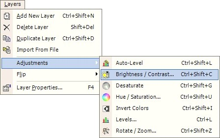
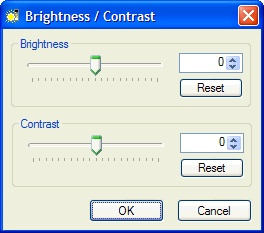

| Original Image | After Adjustment |
 |
 |
Brightness/Contrast
 |
The Brightness and Contrast of an image may be adjusted using Layers --> Adjustments --> Brightness/Contrast. This operation may be used to make the colors of an image brighter, darker, more bold or less bold. |
 |
Shown on the Left is the Brightness / Contrast dialog. When the sliders are moved, the image will be updated giving a preview of the final result of this operation. The images below show the effect that these setting have on the image. |
Original Image
After Adjustment